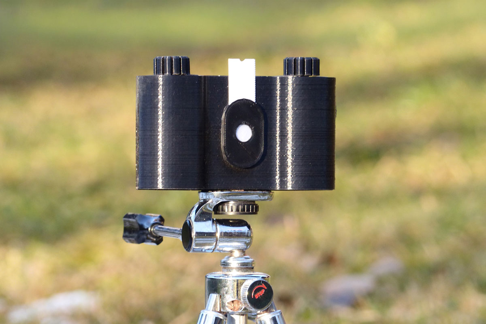
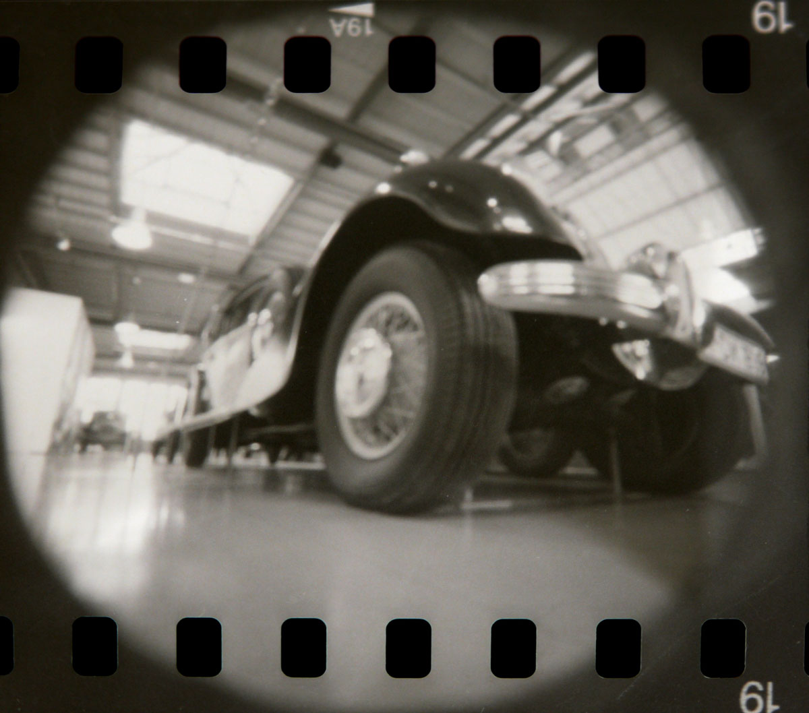
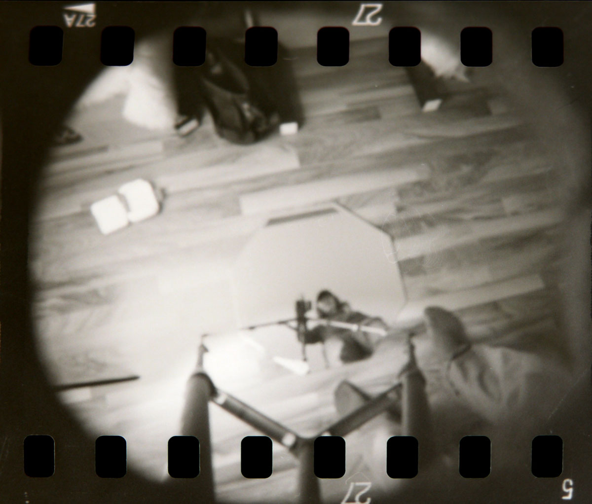
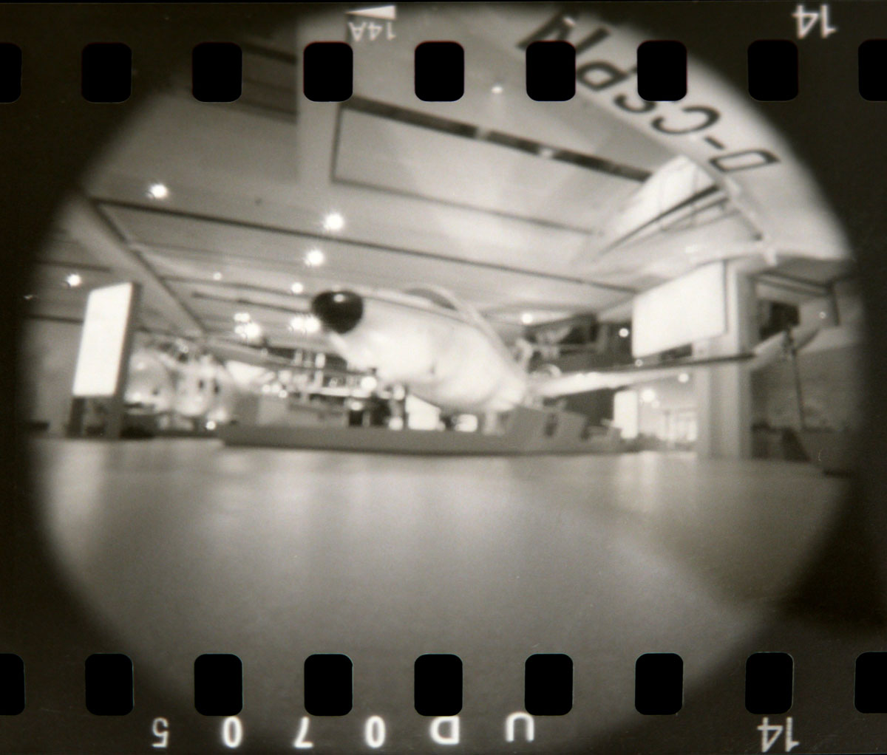
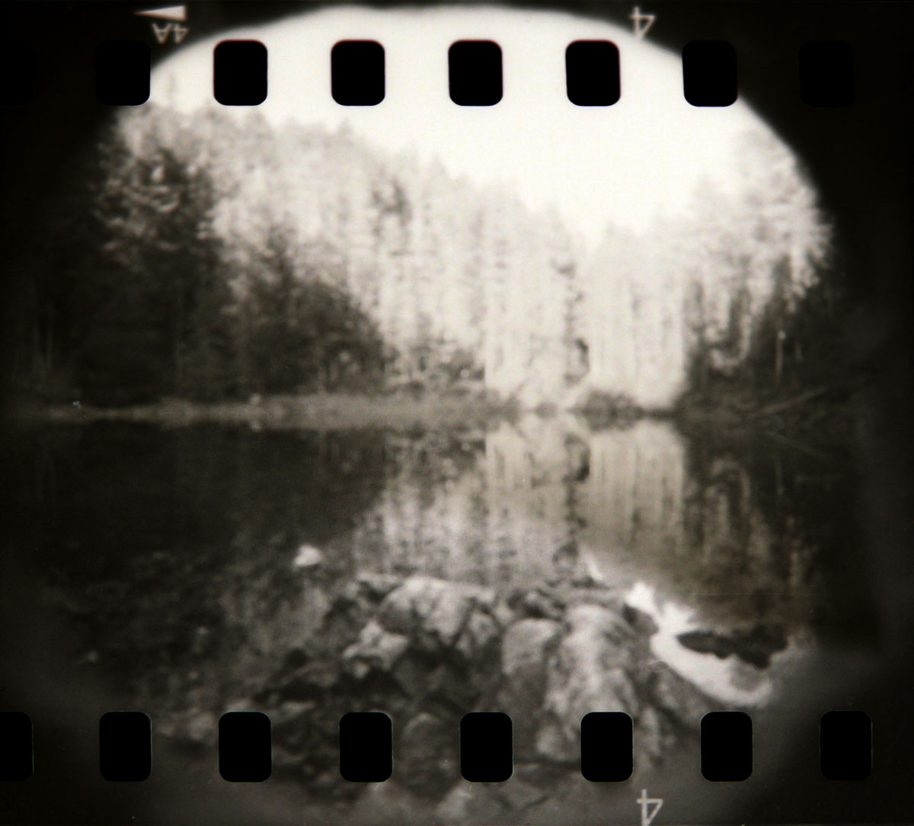
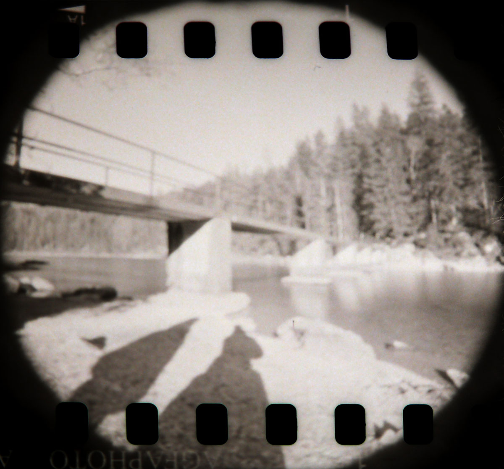
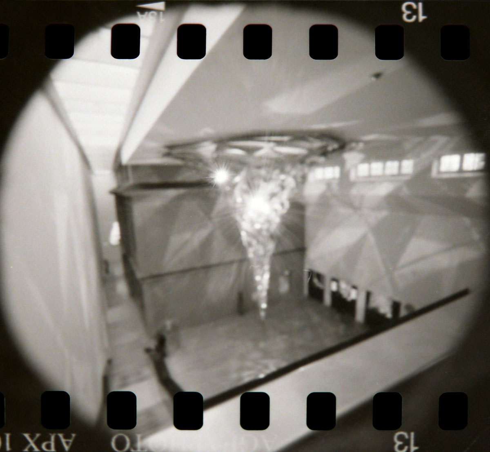

| Project name | black and white camera |
|---|---|
| Year | 2023,2026 |
| About | Wide angle camera. Most of the components are 3d printed, the spools are aluminum and the hole plate is a copper sheet. A pinhole camera is the simplest version of a camera. It does not have a lens, instead it has a tiny hole where light can fall through. The light is then captured on 35mm film. You can not focus how you would with a normal camera, an almost sharp picture is created by using the optimal pinhole diameter in relation to the distance to the film. This project was revisited three years later and a 3d interactive model was created using three.js. |